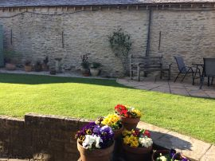
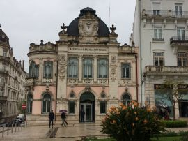

On Easter Monday, thanks to a suggestion by Hannah, the UK based family except for Martin, Louise and Archie, assembled at Savernake Forest in glorious weather. Fortunately, Annie and Gerry got there early to secure a suitable site as it got very crowded later. We all had a lovely time with some children playing football others (Hannah) climbing trees and young Emma wanting to follow suit. The other children, Rosie,Ptolemy, Oscar, Felix, and Elsie has a whale of a time making dens and generally exploring. Callum and Bethany did more grown up things! We enjoyed a super spread with Hot Dogs, BBQ’d sausages, salads, cakes, chocolate and an Easter Egg Hunt for the tiddlers.
Thanks to everyone for their contributions and for braving the Bank Holiday traffic – it was certainly a day to remember.
The good weather over Easter saw us work hard on the garden. In particular we got the flower beds weeded, grass cut and treated and new plants set in tubs. The main task, however, was to repair the damage done by the contractors who had been pointing the wall and re roofing the byre at the back of our house.
We were pleased with our efforts and although the guttering needs to be fixed and cables hung permanently, the back of the garden looks great.
We enjoyed a morning visiting Highclere Castle the home of Lord and Lady Carnarvon but better known to most as Downton Abbey. Although the village associated with the TV series is Bampton in Oxfordshire, the ‘big house’ is in fact located in Berkshire. It was fun to see the rooms that were shown in the series – they all seemed much smaller than on the TV. We had got there early and thoroughly enjoyed a quiet walk around the grounds before visiting the house. By the time we left the whole place was packed with visitors!
At the end of March we set out for a Viking River Cruise along the Douro from Porto towards the Spanish Border. However, our first couple of days were spent in Lisbon. The weather was lovely and we enjoyed wandering around. Praca do Comercio or Commerce Square was beautiful as was the Castle type structure on the coast by the maritime museum. There were quite a few interesting exhibits in the museum and the Royal Barge was quite something.
Down Town Lisbon was a great place to explore on foot and we walked over 11 miles during our day and a half in the city. The Avenida da Liberdade connecting downtown Lisbon and the Parque Eduardo VII was something special. The avenue was built in the 19th century in the style of the Champs-Elysees in Paris,. You can see the width of the road by looking at the distance between buildings in the picture below taken from the top of the park.
After a day and a half in Lisbon we travelled by coach toward Porto to join our boat. En route we stopped at the town of Coimbra where we were impressed with the bank building. By now it was raining and set the scene for the weather for most of the rest of our holiday – wet, cold or wet and cold! Both the coach and the Boat Viking Helgrim were brand new. Indeed it was to be our boat’s first trip with passengers. Unfortunately, there were several gremlins with the boat which, although quite an issue for many, did not worry us.
Viking Helgrim was moored at Vila Nova de Gaia on the opposite bank of the river from the city of Porto. Porto was quite a sprawling city and we enjoyed an organised sightseeing trip which included the historic railway station with beautiful tiled murals (more of this later).
However, the view of Porto’s river side from a cable car near our boat’s mooring and then the view at night from our boat showed Porto’s riverside at its best.
We cruised up the Douro enjoying wonderful views of the quite steep river banks. There were terraces of olive trees, vines and occasionally cork trees. The pictures didn’t really show the obvious beauty of the scenery because the weather was quite dull.
We stopped at various points to visit some sights including a Sandeman winery and the beautiful Mateus Estate shown below.
Gerry was happy because there was a railway running beside the river occasionally crossing the river to run along the other side. The fact that the railway was only a few feet above the river demonstrated a confidence that the river levels could be maintained fairly constant over the sections between the locks.
We navigated through five locks on our journey. Each was quite massive but still meant that vessels could be no longer than 83 Metres (272 Ft) and no wider than 11.4 metres (37 ft). The highest lock at the Carrapatelo Dam has a maximum lift of 35 metres (115 ft). There were also restrictions on the height above river level to go under several bridges (particularly at the locks). The photos below show the tightness of the fit for our boat you can make out the captain’s head as he peered over the top of the wheel house which had been lowered to pass under the bridge.
We cruised north to Barca d’Alva, not far from the Spanish border. From there we enjoyed a tour to Castelo Rodrigo a small town approximately 2,200 feet above sea level and surrounded by almond trees. The streets were narrow and steep, and many houses had 16th-century facades and the distinctively Portuguese Manueline-style windows. We also walked up Sinagoga Street, a remembrance of the Jewish community established by refugees from the Spanish Inquisition.
We also enjoyed a day trip to Salamanca in Spain. Although the weather was dire, between 4 and 8 degrees Celsius and the odd shower of rain or hail stones, we had a good time. The Cathedral was quite stark inside although the High Altar was quite attractive.
The high spot for us was a visit to the Art Noveau and Art Deco Museum. Apart from an amazing collection of art by Picasso, Salvador Dali et al there was a tremendous variety of art deco to enjoy. Even the café was rather special.
After Salamanca, our boat headed back down river towards Porto. We stopped to allow us to visit the town of Lamego and the Sanctuary of Nossa Senhora dos Remedios at the top of a hill reached by road or by climbing 686 steps.
The bus took us to the top but we then walked down the steps. On the way down we marvelled at the Blue and White tile mural. During our trip we had seen many such beautiful murals including at the railway station in Porto and at Barca d’Alva. Ironically it was at the latter place where the train was depicted!

Our trip was over far too soon and we headed back to Porto on the boat and then flew home via Lisbon. Although Viking Helgrim had quite a few issues probably because it was brand new and on its first passenger carrying voyage, we had a great time. We ate and drank well not just on the boat but also at several places we were taken to on shore. Our conclusion – it was a great holiday.
A day and a half after returning from our trip to North Wales, we headed to Yorkshire for a week. We stayed in a cottage attached to the Pear Tree B&B in Pickering that we have used several times – it was excellent and would certainly recommend it. Arriving in Pickering at lunch time, we went straight to Thornton-Le-Dale and walked up the valley to Ellerburn and back. We have done this walk several times and enjoyed it as much as ever except that the tea rooms at Ellerburn weren’t open.
On Saturday we went to Richmond Castle and enjoyed the glorious view down to the River Swale. After walking around the town of Richmond we headed the few miles to Middleham Castle before returning to Pickering.
In Pickering we went on another of our favourite walks up the valley beside the North Yorkshire Railway Line and Pickering Beck. Unfortunately, there were no trains running to add to the magic!
Sunday saw us going on another of our usual walks, this time in Farndale and it was as beautiful as ever.
We had started the walk early and managed to finish just as the crowds began to arrive to do the famous Farndale Daffodil Walk. They must have been disappointed as not a single daffodil was out beside the paths. As it was still only mid morning, and we were wanting to walk some more, we drove to Lastingham and walked up over the hills to Hutton-Le-Hole. The walk was quite hard – the climbs up and down were steep and quite slippery – but we managed! The return section of the walk was across flatter fields and roads. In Hutton-Le-Hole we did see daffodils!
On the following day we took the bus into York. The journey took nearly an hour and a half and we were able to enjoy good views of the countryside from the top deck of the bus. Once in York, our first stop was the Railway Museum where we spent a fascinating two hours. After that, we walked across the city to The Shambles. The street had changed from how Gerry remembered it forty years ago – the shops were a lot tackier and more touristy. Nevertheless, we had a good visit including a relaxing glass of wine in The Golden Fleece at the end of The Shambles. 
David and Bridget Lindley, our friends from Leeds, visited us at Pickering on the Tuesday. We drove to The Royal Oak Pub in the village of Gillamoor for a most pleasant lunch and were quite surprised when we emerged from the pub to find that the sun was shining! On a whim, we decided to drive to Whitby and enjoyed a very pleasant stroll over the swing bridge and around the eastern side of the old town before returning for tea and cake at our cottage.
The next day, we walked along the line of the old railway from Grosmont to Beck Hole and back to Grosmont. The walk was really pleasant and the rain held off until we had finished. We felt we had earned lunch so returned to Whitby and The Magpie where we enjoyed a lovely meal (as usual).
Our final day in Yorkshire was spent in full wet weather gear doing two walks. The first was a 4.5 mile circular walk from Nunnington Hall heading first to Caulkleys Bank. We then walked along the bank enjoying tremendous views of countryside below us despite the sharp cold wind and occasional squall of rain. From the Bank, we descended along Caulkleys Lane and returned to Nunnington along the banks of the River Rye. Having visited Nunnington Hall previously, we decided not to visit the house again as neither of us wanted to remove our wet weather gear and then put it back on for our next walk. We were, however, greeted by one of Nunnington’s peacocks’
Our final walk was around the village of Terrington. The walk was only 2.5 miles but the soggy ground and inclines made it feel a lot harder. Nevertheless, it was an enjoyable walk to end our visit to Yorkshire.
The weather for the last half of February was fantastic with the warmest area of the UK being North West Wales. It just so happens that we had booked a four night stay at The White Lion Royal Hotel in Bala (our usual haunt in North Wales). There may have been frost on the car every morning but we enjoyed glorious sunshine and temperatures above 20C during the days.
We arrived on Saturday afternoon and completed our usual walk around Bala and along part of the lake shore before enjoying a curry at Bala Spice (just as good as ever).
On Sunday we headed to Mawddach and a walk along a disused railway track bed beside the Mawddach Estuary to a marvellous viewpoint. We then retraced our steps and walked over the bridge to Barmouth. The sun had brought out many tourists sitting outside pubs and cafes eating ice creams! – far too many people for us so we beat a hasty retreat. Unlike previous visits, there was no train to complete the photograph this time!
After our walk we drove the couple of miles to Fairbourne where we found the steam railway working.
We didn’t travel on the railway but were able to see the train working and Gerry was able look in the engine shed.
We returned to Bala via Machynlleth and took our usual lake walk before supper.
.
On the next day we headed to Bodnant Garden near Conwy. What a brilliant couple of hours walking around the estate – the pictures speak for themselves.
.
.
From Bodnant, we travelled to Plas Newydd on the Isle of Angelsey. As usual, we went for a walk around the estate rather than visit the house. Once again we found the gardens were a blaze of colour especially the heather beds.
.
.
Our final full day saw us undertake a six mile walk. We set off from the village of LLanystumdwy, walked past the LLoyd George Museum to go through woods on the banks of the River Dwyvor for 1.5 miles. From there we walked along a minor road before crossing farmland and walking into the town of Criccieth. After a break for coffee, we continued along the coast path for a couple of miles before heading inland back to our starting point – a lovely walk in brilliant weather.
We concluded our day with our usual walk to Bala lake. We had seen some beautiful sunsets on previous days, but the view over the lake on our last evening was amazing.
Early in February we enjoyed a wet and windy few days based at Hotel L’Hermitage in Montreuil Sur Mer. Prior to crossing to France we stayed the night at the Premier Inn on the A20 just outside Dover. Thus, we had an early ferry and got to Montreuil just after lunch. After settling in to our splendid hotel room we made our customary circuit of the ramparts before enjoying a glass of wine or two. The next four days were typically spent walking in the morning, lunch and then a circuit of the ramparts before supper. We enjoyed lunches at L’Ecurie in Hesdin and L’Esplanade at Berck Plage where we had eaten on previous trips. However, we also found two new restaurants; Le Patio in Montreuil itself and Auberge du Cronquelet in the nearby village of St Aubin. Both of these restaurants proved to be excellent with gourmet food beautifully presented,good service and reasonable process. We shall certainly return!
The weather for our walks varied between needing full wet weather gear and just waterproof tops. Not only did we have to contend with the rain, but the wind was often very gusty and bitingly cold. However, we had the right equipment and thoroughly enjoyed our walks. The views were often limited by the weather and greyness prevailed.
.
.
Our walks around the walls of the town were as pleasant as usual.
.
.
.
One area of the town was undergoing major redevelopment but we could not determine whether the charm of the old town will be retained or replaced with modern uninspiring buildings. It would be a shame if the character and history of Montreuil were to be destroyed. That said, there was an outstanding piece of renovation on the spire of the church attached to our hotel – we were truly impressed.
Once again we had a really enjoyable break in what is certainly one of our favourite towns.
We spent the evening of Saturday February 2nd in Cardiff. We stayed at the Atlantic Wharf Travelodge, a hotel situated in the redeveloped dockland area of Cardiff. It was a great place to stay and the number of restaurants within 5 minutes walk of the hotel meant we were spoiled for choice. The next morning we drove the short distance into the centre of Cardiff for a scratch music day at St David’s Hall. In previous years we have taken part in the same event at The Colston Hall in Bristol. Redevelopment work at Colston Hall resulted in the change of venue to Cardiff. It was a brilliant day of hard work rehearing with the choir of around 280 and an orchestra of the same size. We finished the day with a free concert. The day is in aid of Cancer Research and was expected to raise several thousands of pounds. The concert went very well and was well supported given the fact that virtually no one in the choir or orchestra came from Cardiff. The picture, taken from the choir stalls, shows the orchestra and some of the audience.
We had a lovely weekend and look forward to next year’s event which will also be in St David’s Hall.

.
What an interesting month January has been.
In Cornwall, we have seen Daffodils, Camelias and snowdrops(but none in the photos).
.
.
During a walk with Hannah, Rosie and Ptolemy at Stourhead we saw snowdrops and aconites,
At the end of the month, we came upon daffodils and hyacinths during a walk at Blenheim Palace.
However, the first of February brought 12cm of snow to Fairford.
After quite a busy December and Christmas period, we decided to head to Mousehole,Cornwall for a week in a bungalow. Our fist night coincided with the last night of the famous Mousehole Christmas Lights. Not knowing what to expect, we were delighted with the quality and extent of the lights around and in the harbour.
Throughout our week we enjoyed really good weather with temperatures so much warmer than we would expect. We came across quite a few wild daffodils, Camellia and other flowers and bushes. It was hard to imagine it was the second week of January. As a result of the good weather, we managed to walk every day including National Trust sites at Penrose, Godolphin and Trelissick. Additionally, we walked on the Cornish Coast Path at The Lizard and St Ives. Views from The lizard and of St Ives across the beach are shown below.
Whilst we were in St Ives, we took the opportunity to visit the Tate Gallery.
We also visited and were quite disappointed with Land End a profit making and tacky sort of place as far as we are concerned.
However, we then visited the Minack Theatre which was, by contrast, spectacular. Not only was the theatre itself great to look at so were the views from various parts of the theatre. including the rocks going down to the sea from the back of the stage! and Porthcurno Beach
We also visited Mevagissey. It was quite a drive from Mousehole but walking along the breakwater and eating a pasty sitting on a seat overlooking the harbour is something we seem to do every time we visit Cornwall!
With the weather so good it was not surprising that we had some lovely sunrises and sunsets. This view is sunrise from the deck of our bungalow and is a fitting end to this blog entry.